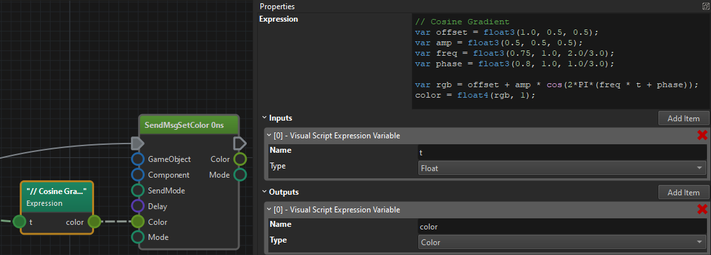

Visual Script: Math Nodes
Math
All sorts of mathematical operations for working with number types, vectors, and rotations.
Quat
Quaternion nodes provide utility functions for working with rotations. Quaternions are used throughout the engine to represent 3D rotations.
Common quaternion operations include:
- Rotation construction - Create rotations from axis-angle or Euler angles
- Rotation composition - Combine multiple rotations
- Interpolation - Smoothly blend between rotations (SLERP - Spherical Linear Interpolation)
- Direction vectors - Extract forward, up, and right vectors from rotations
- Rotation application - Apply rotations to vectors
Use quaternion nodes when working with object orientations, camera rotations, or any other 3D rotation operations. They integrate seamlessly with game object transform nodes for positioning and orienting objects in the scene.
Expression Node
The Expression node lets you write complex mathematical expressions with multiple input and output values. This is much more convenient than using many individual math nodes.

The following built-in functions are available:
abs(number)saturate(number)- clamps number to[0; 1]rangesqrt(number)exp(number)ln(number)log2(number)log10(number)pow2(number)sin(number)cos(number)tan(number)asin(number)acos(number)atan(number)radToDeg(number)orrad_to_deg(number)degToRad(number)ordeg_to_rad(number)round(number)floor(number)ceil(number)trunc(number)frac(number)length(vector)normalize(vector)trunc(number)all(number)any(number)mod(number, number)- computesamoduloblog(number, number)pow(number, number)min(number, number)max(number, number)dot(vector, vector)cross(vector, vector)reflect(vector, vector)clamp(value, min, max)lerp(min, max, factor)smoothstep(value, edge1, edge2)- returns 0, if value is <= edge1, 1 if value >= edge2 and the hermite interpolation in betweensmootherstep(value, edge1, edge2)- returns 0, if value is <= edge1, 1 if value >= edge2 and the second order hermite interpolation in between